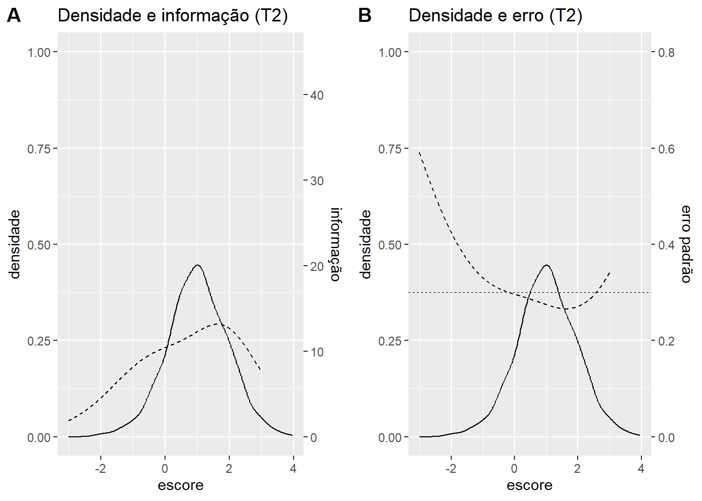
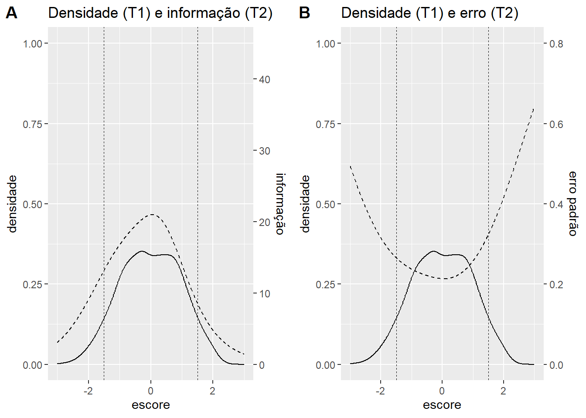

data(banco2pl.t2, package = 'oficinaTRI2025')3 Segunda aplicação
3.1 Preparação
Importar banco
Nome das variáveis do banco
names(banco2pl.t2) [1] "Item_21" "Item_22" "Item_23" "Item_24" "Item_25" "Item_26" "Item_27"
[8] "Item_28" "Item_29" "Item_30" "Item_31" "Item_32" "Item_33" "Item_34"
[15] "Item_35" "Item_36" "Item_37" "Item_38" "Item_39" "Item_40" "Item_41"
[22] "Item_42" "Item_43" "Item_44" "Item_45" "Item_46" "Item_47" "Item_48"
[29] "Item_49" "Item_50" "Item_51" "Item_52" "Item_53" "Item_54" "Item_55"
[36] "Item_56" "Item_57" "Item_58" "Item_59" "Item_60" "Item_61" "Item_62"
[43] "Item_63" "Item_64" "Item_65" "Item_66" "Item_67" "Item_68" "Item_69"
[50] "Item_70"São 50 itens, dos quais 30 são comuns à primeira aplicação (T1).
3.2 Calibração dos novos itens
Calibrar os itens no modelo logístico de dois parâmetros
fit.t2 <- mirt(data = banco2pl.t2, model = 1, itemtype = '2PL', TOL = .001)Armazenar os parâmetros em um objeto
pars.t2 <- data.frame(coef(fit.t2, IRTpars = TRUE, simplify = TRUE)$items)
head(pars.t2) a b g u
Item_21 0.7753887 -1.1513163 0 1
Item_22 0.8197196 -1.0314158 0 1
Item_23 0.6417964 -1.3302786 0 1
Item_24 0.5600919 -0.5028186 0 1
Item_25 0.6187925 -0.5468962 0 1
Item_26 1.4868170 -1.6944457 0 1Problema: a referência da escala da calibração T2 é diferente da referência da calibração T1. Portanto as medidas T1 e T2 não são comparáveis. Uma solução é fixar os parâmetros dos itens comuns. Esse procedimento é chamado de Calibração com Parâmetros de Itens Fixos (Fixed Item Parameters Calibration, FIPC) e é utilizado no PISA (Programa Internacional de Avaliação de Estudantes, Programme for International Student Assessment) para equalizar as provas de edições diferentes.
Primeiro, é preciso gerar a tabela de parâmetros inicial para configurar esses parâmetros. Para isso, usamos o argumento pars.
tab.pars <- mirt(data = banco2pl.t2,
model = 1,
itemtype = '2PL',
TOL = .001,
pars = 'values')
head(tab.pars) group item class name parnum value lbound ubound est const nconst
1 all Item_21 dich a1 1 0.851 -Inf Inf TRUE none none
2 all Item_21 dich d 2 0.969 -Inf Inf TRUE none none
3 all Item_21 dich g 3 0.000 0 1 FALSE none none
4 all Item_21 dich u 4 1.000 0 1 FALSE none none
5 all Item_22 dich a1 5 0.851 -Inf Inf TRUE none none
6 all Item_22 dich d 6 0.908 -Inf Inf TRUE none none
prior.type prior_1 prior_2
1 none NaN NaN
2 none NaN NaN
3 none NaN NaN
4 none NaN NaN
5 none NaN NaN
6 none NaN NaNAgora, vamos atribuir os valores obtidos na calibração T1. Um caminho é obter esses valores a partir da tabela de parâmetros final da calibração T1 e incluí-los no objeto tab.pars para a calibração T2.
Primeiro, vamos criar um objeto com nome dos itens comuns e pegar a tabela de parâmetros final da calibração T1 com a função mod2values.
itens.comuns <- paste0('Item_', 21:50)
pars.comuns <- mod2values(fit.t1)
head(pars.comuns) group item class name parnum value lbound ubound est const nconst
1 all Item_1 dich a1 1 0.879 -Inf Inf TRUE none none
2 all Item_1 dich d 2 1.722 -Inf Inf TRUE none none
3 all Item_1 dich g 3 0.000 0 1 FALSE none none
4 all Item_1 dich u 4 1.000 0 1 FALSE none none
5 all Item_2 dich a1 5 1.571 -Inf Inf TRUE none none
6 all Item_2 dich d 6 0.468 -Inf Inf TRUE none none
prior.type prior_1 prior_2
1 none NaN NaN
2 none NaN NaN
3 none NaN NaN
4 none NaN NaN
5 none NaN NaN
6 none NaN NaNEm seguida, vamos fazer um loop para atribuir os valores dos parâmetros de T1 na tabela de parâmetros de T2. Os valores devem ser obtidos da calibração T1 e a variável est desses itens deve ser FALSE para a calibração T2.
for(i in 1:length(itens.comuns))
{
tab.pars[tab.pars$item == itens.comuns[i] & tab.pars$name == 'a1', 'value'] <- pars.comuns[pars.comuns$item == itens.comuns[i] & pars.comuns$name == 'a1', 'value']
tab.pars[tab.pars$item == itens.comuns[i] & tab.pars$name == 'd', 'value'] <- pars.comuns[pars.comuns$item == itens.comuns[i] & pars.comuns$name == 'd', 'value']
tab.pars[tab.pars$item == itens.comuns[i], 'est'] <- FALSE
}Veja que agora os ietns comuns têm os parâmetros fixados com os valores obtidos em T1.
head (tab.pars) group item class name parnum value lbound ubound est const nconst
1 all Item_21 dich a1 1 1.361 -Inf Inf FALSE none none
2 all Item_21 dich d 2 1.793 -Inf Inf FALSE none none
3 all Item_21 dich g 3 0.000 0 1 FALSE none none
4 all Item_21 dich u 4 1.000 0 1 FALSE none none
5 all Item_22 dich a1 5 1.128 -Inf Inf FALSE none none
6 all Item_22 dich d 6 1.643 -Inf Inf FALSE none none
prior.type prior_1 prior_2
1 none NaN NaN
2 none NaN NaN
3 none NaN NaN
4 none NaN NaN
5 none NaN NaN
6 none NaN NaNNa nova calibração de T2, note a diferença no argumento pars.
fit.t2 <- mirt(data = banco2pl.t2,
model = 1,
itemtype = '2PL',
TOL = .001,
pars = tab.pars)A calibração rodou, porém está incorreta. Por padrão, o mirt fixa a média do grupo de referência da calibração em 0 e o desvio padrão, em 1. Veja esses valores obtidos nas calibrações T1 e T2. Em ambos os casos, a média do grupo é 0.
coef(fit.t1, simplify = TRUE)$items
a1 d g u
Item_1 0.879 1.722 0 1
Item_2 1.571 0.468 0 1
Item_3 1.563 2.215 0 1
Item_4 1.646 1.090 0 1
Item_5 2.181 2.895 0 1
Item_6 1.728 -0.161 0 1
Item_7 0.670 0.718 0 1
Item_8 1.050 1.221 0 1
Item_9 1.788 1.912 0 1
Item_10 1.638 2.887 0 1
Item_11 1.922 2.700 0 1
Item_12 1.541 3.320 0 1
Item_13 1.343 1.965 0 1
Item_14 1.842 1.862 0 1
Item_15 0.998 1.172 0 1
Item_16 1.824 -0.601 0 1
Item_17 1.012 1.656 0 1
Item_18 1.123 1.383 0 1
Item_19 0.922 0.852 0 1
Item_20 1.084 1.558 0 1
Item_21 1.361 1.793 0 1
Item_22 1.128 1.643 0 1
Item_23 0.932 1.429 0 1
Item_24 0.667 0.811 0 1
Item_25 0.913 0.984 0 1
Item_26 1.889 3.640 0 1
Item_27 1.706 1.727 0 1
Item_28 1.804 2.781 0 1
Item_29 1.827 2.665 0 1
Item_30 0.835 0.559 0 1
Item_31 1.320 0.329 0 1
Item_32 1.273 -0.509 0 1
Item_33 1.275 1.405 0 1
Item_34 1.234 -0.645 0 1
Item_35 0.933 1.328 0 1
Item_36 1.765 0.405 0 1
Item_37 1.041 -1.055 0 1
Item_38 1.250 0.764 0 1
Item_39 2.266 2.495 0 1
Item_40 1.845 1.280 0 1
Item_41 1.740 -0.812 0 1
Item_42 1.581 2.321 0 1
Item_43 1.214 -0.154 0 1
Item_44 1.779 -0.341 0 1
Item_45 1.266 0.584 0 1
Item_46 1.381 0.847 0 1
Item_47 1.874 1.694 0 1
Item_48 1.381 1.387 0 1
Item_49 1.154 0.269 0 1
Item_50 1.792 -1.277 0 1
$means
F1
0
$cov
F1
F1 1coef(fit.t2, simplify = TRUE)$items
a1 d g u
Item_21 0.775 0.893 0 1
Item_22 0.820 0.845 0 1
Item_23 0.642 0.854 0 1
Item_24 0.560 0.282 0 1
Item_25 0.619 0.338 0 1
Item_26 1.487 2.519 0 1
Item_27 1.141 0.602 0 1
Item_28 1.530 1.581 0 1
Item_29 1.154 1.315 0 1
Item_30 0.594 0.118 0 1
Item_31 0.855 -0.660 0 1
Item_32 0.845 -1.215 0 1
Item_33 0.837 0.721 0 1
Item_34 1.027 -1.702 0 1
Item_35 0.776 0.872 0 1
Item_36 1.180 -0.906 0 1
Item_37 0.711 -1.752 0 1
Item_38 0.714 -0.013 0 1
Item_39 1.405 1.020 0 1
Item_40 1.196 0.053 0 1
Item_41 1.371 -1.984 0 1
Item_42 1.157 1.316 0 1
Item_43 0.887 -1.084 0 1
Item_44 1.013 -1.519 0 1
Item_45 0.806 -0.322 0 1
Item_46 1.056 0.032 0 1
Item_47 1.017 0.469 0 1
Item_48 1.060 0.374 0 1
Item_49 0.692 -0.564 0 1
Item_50 1.151 -2.712 0 1
Item_51 0.566 -0.875 0 1
Item_52 1.310 -1.652 0 1
Item_53 1.104 -1.284 0 1
Item_54 1.021 -1.217 0 1
Item_55 1.284 -1.683 0 1
Item_56 0.939 -1.834 0 1
Item_57 0.544 -0.777 0 1
Item_58 0.619 -1.333 0 1
Item_59 1.264 -2.230 0 1
Item_60 1.024 -1.117 0 1
Item_61 1.455 -2.035 0 1
Item_62 1.178 -1.532 0 1
Item_63 0.826 -1.044 0 1
Item_64 1.282 -2.103 0 1
Item_65 0.912 -1.103 0 1
Item_66 1.353 -2.463 0 1
Item_67 0.654 -0.987 0 1
Item_68 0.905 -0.919 0 1
Item_69 0.758 -1.379 0 1
Item_70 0.888 -1.302 0 1
$means
F1
0
$cov
F1
F1 1Isso significa que na calibração T1 os itens foram calibrados tendo o grupo T1 como referência. O centro da escala (0) é a média do grupo T1. Ocorre que na calibração T2, o mirt também fixou a média do grupo em 0. Ou seja, o grupo T2 está sendo tratado como a referência da escala. Porém, a referência deve ser o grupo T1, cuja média é de fato o centro da escala, pois os itens estão fixados com os valores obtidos na calibração T1. Portanto, para mantermos a referência correta, é preciso liberar a estimação da média e do desvio padrão do grupo T2 na calibração. Isso é feito na tabela de parâmetros inicial da calibração T2.
Em resumo, na calibração T2 é preciso fixar os itens comuns e liberar a média e o desvio do grupo novo (T2). O complemento do comando para fazer é isso é:
tab.pars[tab.pars$name == 'MEAN_1', 'est'] <- TRUE
tab.pars[tab.pars$name == 'COV_11', 'est'] <- TRUEAgora sim, a calibração T2.
fit.t2 <- mirt(data = banco2pl.t2,
model = 1,
itemtype = '2PL',
TOL = .001,
pars = tab.pars)3.3 Análise de DIF
Nesta atividade, vamos usar o método do Root Mean Square Deviation (RMSD, Raiz do Desvio Quadrático Médio). A função RMSD_DIF no pacote mirt implementa o método, porém somente para objetos do tipo MultipleGroupClass, gerado pela função multipleGroup. Como o nosso objeto é SingleGroupClass, adaptei a função. O critério utilizado nesta atividade para marcar itens com DIF é 0.10, como sugerido por Klein (2025).
dif.rmsd(calib = fit.t2, flag = 0.10) P.0 P.1
Item_21 NA NA
Item_22 NA NA
Item_23 NA NA
Item_24 NA NA
Item_25 NA NA
Item_26 NA NA
Item_27 NA NA
Item_28 NA NA
Item_29 NA NA
Item_30 NA NA
Item_31 NA NA
Item_32 NA NA
Item_33 NA NA
Item_34 NA NA
Item_35 NA NA
Item_36 NA NA
Item_37 NA NA
Item_38 NA NA
Item_39 NA NA
Item_40 NA NA
Item_41 NA NA
Item_42 NA NA
Item_43 NA NA
Item_44 NA NA
Item_45 NA NA
Item_46 NA NA
Item_47 NA NA
Item_48 NA NA
Item_49 NA NA
Item_50 NA NA
Item_51 NA NA
Item_52 NA NA
Item_53 NA NA
Item_54 NA NA
Item_55 NA NA
Item_56 NA NA
Item_57 NA NA
Item_58 NA NA
Item_59 NA NA
Item_60 NA NA
Item_61 NA NA
Item_62 NA NA
Item_63 NA NA
Item_64 NA NA
Item_65 NA NA
Item_66 NA NA
Item_67 NA NA
Item_68 NA NA
Item_69 NA NA
Item_70 NA NAConclusão: não foi detectado DIF com o método RMSD.
3.4 Estimação do escore dos sujeitos
Calcular o escore dos sujeitos e o erro de medida
escore.t2 <- data.frame(fscores(fit.t2, full.scores.SE = TRUE))
head(escore.t2) F1 SE_F1
1 -0.3448275 0.2124052
2 -1.0397721 0.2319709
3 -1.4269443 0.2517376
4 -0.2014104 0.2103421
5 -0.9622431 0.2289506
6 -1.5897775 0.26284793.5 Avaliação do instrumento T2 e cobertura do construto
Gráficos com a curva de densidade da amostra, informação do teste e erro de medida na calibração T2.
info_t2 <- testinfo(fit.t2, seq(-3, 3, .01))
grafico_t2_info <- ggplot() +
geom_density(aes(x = escore.t2$F1)) +
labs(title='Densidade e informação (T2)', x= "escore", y = "densidade") +
geom_line(aes(x = seq(-3, 3, .01), y = info_t2 / 45), linetype = 2) +
geom_vline(xintercept = c(-1.5, 1.5), linetype = 2, linewidth = .3) +
scale_y_continuous(limits = c(0, 1),
sec.axis = sec_axis(~ . * 45, name = 'informação'))
erro_t2 <- 1/sqrt(info_t2 + 1)
grafico_t2_erro <- ggplot() +
geom_density(aes(x = escore.t2$F1)) +
labs(title='Densidade e erro (T2)', x= "escore", y = "densidade") +
geom_line(aes(x = seq(-3, 3, .01), y = erro_t2 / .8), linetype = 2) +
geom_vline(xintercept = c(-1.5, 1.5), linetype = 2, linewidth = .3) +
scale_y_continuous(limits = c(0, 1),
sec.axis = sec_axis(~ . * .8, name = 'erro padrão'))
plot_grid(grafico_t2_info, grafico_t2_erro,
labels = c('A', 'B'),
ncol = 2)
Avaliação do instrumento T2 caso fosse aplicado ao grupo T1.
grafico_t2_t1_info <- ggplot() +
geom_density(aes(x = escore.t1$F1)) +
labs(title='Densidade (T1) e informação (T2)', x= "escore", y = "densidade") +
geom_line(aes(x = seq(-3, 3, .01), y = info_t2 / 45), linetype = 2) +
geom_vline(xintercept = c(-1.5, 1.5), linetype = 2, linewidth = .3) +
scale_y_continuous(limits = c(0, 1),
sec.axis = sec_axis(~ . * 45, name = 'informação'))
grafico_t2_t1_erro <- ggplot() +
geom_density(aes(x = escore.t1$F1)) +
labs(title='Densidade (T1) e erro (T2)', x= "escore", y = "densidade") +
geom_line(aes(x = seq(-3, 3, .01), y = erro_t2 / .8), linetype = 2) +
geom_vline(xintercept = c(-1.5, 1.5), linetype = 2, linewidth = .3) +
scale_y_continuous(limits = c(0, 1),
sec.axis = sec_axis(~ . * .8, name = 'erro padrão'))
plot_grid(grafico_t2_t1_info, grafico_t2_t1_erro,
labels = c('A', 'B'),
ncol = 2)